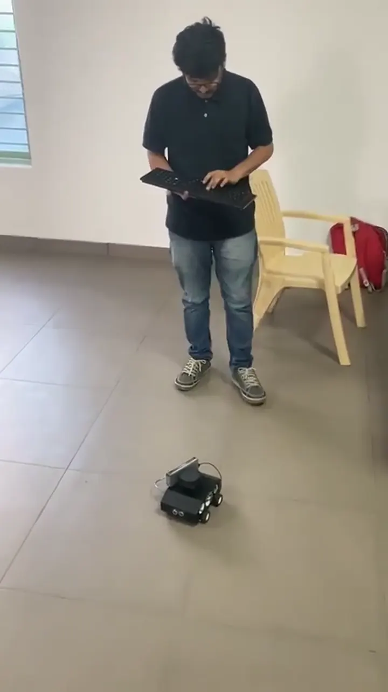
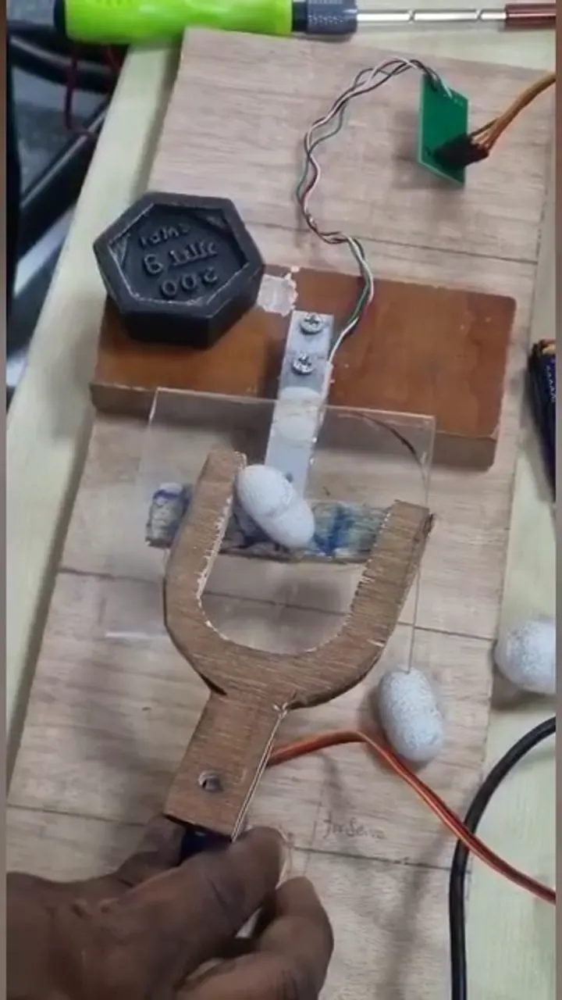

Curio — Museum Guidance Robot
Guidance robot for the Kolkata Museum that navigates the exhibit halls and answers visitor questions about science and technology exhibits.
ROS 2Nav2SLAMJetson Nano
Work
Robots and subsystems I have built — with the architecture, hardware, software, and results behind them.
Guidance robot for the Kolkata Museum that navigates the exhibit halls and answers visitor questions about science and technology exhibits.
ROS 2Nav2SLAMJetson Nano

Visual SLAM, 3D mapping, autonomous docking, an RS-485 motor driver, and micro-ROS firmware on FreeRTOS, integrated on a ROS 2 mobile robot.
ROS 2Nav2ORB-SLAM3RTAB-Map

AMR prototype with a Raspberry Pi 4 for ROS and an Arduino Mega for low-level control, mapping obstacles with an RPLiDAR A1M8 and planning paths with A* search.
ROSRPLiDAR A1M8A* searchRaspberry Pi 4

Custom ROS 2 drivers for a Qwiic ICM-20948 IMU and a VL53L0X time-of-flight sensor, with a sensor-fusion algorithm for localization and obstacle detection.
ROS 2ICM-20948 IMUVL53L0X ToFI²C

Companion humanoid built alongside Curio that senses crowd movement and greets and talks to museum visitors.
SensorsSpeechHuman–robot interaction

Low-cost prototype that sorts male and female silkworm cocoons by weight at 600 cocoons per hour.
ArduinoWeight sensingMechanical designAutomation
Wearable assistive device that detects obstacles with ultrasonic sensors and gives distance-based vibration feedback.
Arduino MegaUltrasonic sensorsVibration motors
Contact
Let’s connect and build something meaningful.